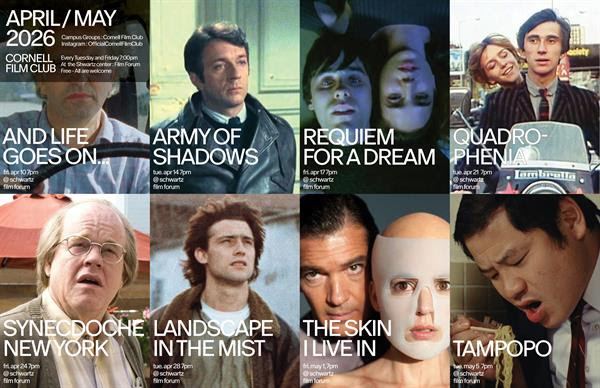

Film Club
As president of Film Club at Cornell, I have the pleasure of bringing together students from all majors and programs to watch films every Tuesday and Friday.
Overview
At the start of each month, I send out a form to gather suggestions from our 200+ members on what films they would like to watch. We begin the screening with some food from some of the fine establishments Ithaca has to offer, then we watch the movie in the Film Forum in the Schwartz Performing Arts Center. I like to end each screening with a discussion to hear what everyone thought of the film.
It's impossible to pick a favorite movie, but that being said, here are some movies that I currently love (in no particular order):
The Lives of Others: In the surveillance state of East Berlin, we follow an officer who is tasked with digging up dirt on an artist and his wife. What follows is a story of empathy and guilt that has made me cry more than once.
Cinema Paradiso: I first watched this movie with my parents when I was about the same age as the protagonist. This is a comfort movie for me. If you are looking for a pleasant watch, I cannot recommend Cinema Paradiso enough.
Pixote: Watching this movie was a visceral experience. We are shown the tragic life of a young Brazilian orphan, Pixote, as he navigates through life in Sao Paolo. Being from Sao Paulo myself, this film really hit me in the heart with its gripping story and gnarly visuals.
Apocalypse Now: Francis Ford Coppola made this masterpiece war film that comments on so many deep aspects of politics, violence, order, and human nature. Such an iconic epic. Personally, my favorite part is any time The Doors start playing.
Amacord: This Italian classic by Fellini is such a pleasant watch. The story follows various characters in a town, and each has a deeper story than the last.
Ainda Estou Aqui: Another amazing Brazilian film. This film put moderm Brazilian cinema on the map at the Academy Awards. With both my parents being activists in 1980s Brazil, this film hits close to home with its true story account of the Brazilian Military Dictatorship
Details
Role: President
Skills: People Management, Fincancial Coordiation, Film Selection, Facilitating Discussion
Context: Interests
Check out our screening list for April!
